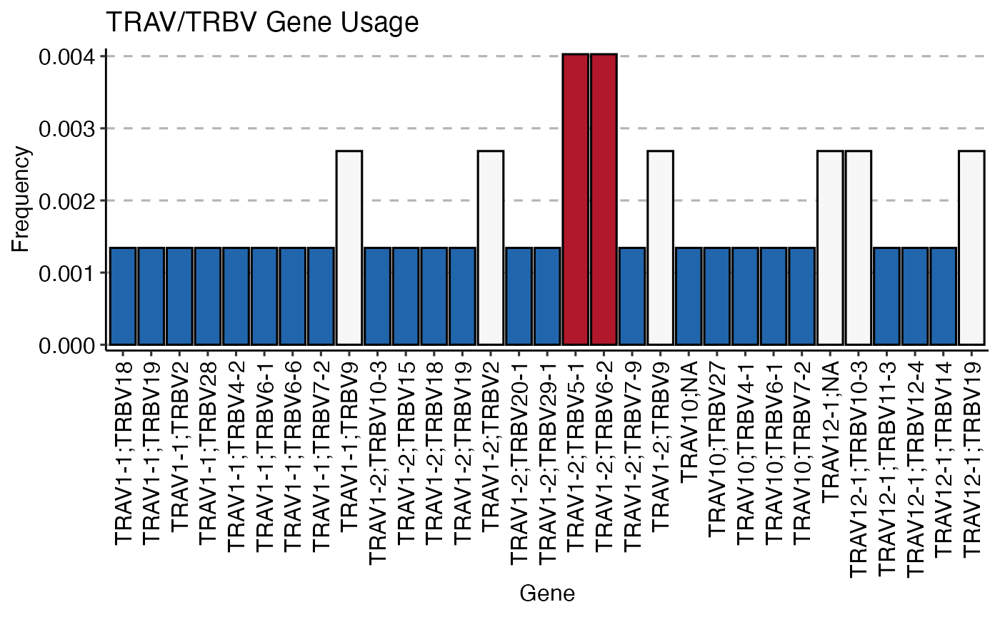

Downstream Analysis with immunarch
Compiled: July 17, 2025
Source:vignettes/articles/immunarch.Rmd
immunarch.RmdOverview
The scRepertoire package provides robust tools for the
initial processing, filtering, and combining of single-cell immune
receptor sequencing data. In addition to scRepertoire,
users have used the immunarch package, which offers a
powerful and comprehensive suite of immune profiling functions.
This vignette demonstrates the seamless integration between
scRepertoire and immunarch. We will use the
exportClones() function with the
format = "immunarch" option to generate a compatible data
object, which can then be directly used for downstream analysis and
visualization with immunarch.
Citation
If using immunarch, please cite the package
@Manual{,
title = {immunarch: Bioinformatics Analysis of T-Cell and B-Cell Immune Repertoires},
author = {Vadim I. Nazarov and Vasily O. Tsvetkov and Siarhei Fiadziushchanka and Eugene Rumynskiy and Aleksandr A. Popov and Ivan Balashov and Maria Samokhina},
year = {2023},
note = {https://immunarch.com/, https://github.com/immunomind/immunarch},
}Setup
First, we need to load the necessary libraries and prepare the
initial data using scRepertoire. We will use the built-in
contig_list example data.
suppressMessages(library(scRepertoire))
suppressMessages(library(immunarch))
suppressMessages(library(ggplot2))
# Load example data from scRepertoire
data("contig_list")
# Combine contigs into a single list
combined <- combineTCR(contig_list, samples = c("P17B", "P17L", "P18B", "P18L", "P19B", "P19L",
"P20B", "P20L"))Exporting for immunarch
The exportClones() function can now format the
scRepertoire object into a list that immunarch
can immediately use. This list contains two key components: *
$data: A list of data frames, where each
data frame is a repertoire from a single sample. *
$meta: A metadata data frame describing
the samples.
# Export the data with write.file = FALSE to get the R object
immunarch_data <- exportClones(combined, format = "immunarch", write.file = FALSE)
# We can inspect the structure of the output
str(immunarch_data, max.level = 2)## List of 2
## $ data:List of 8
## ..$ P17B:'data.frame': 745 obs. of 9 variables:
## ..$ P17L:'data.frame': 2117 obs. of 9 variables:
## ..$ P18B:'data.frame': 1254 obs. of 9 variables:
## ..$ P18L:'data.frame': 1202 obs. of 9 variables:
## ..$ P19B:'data.frame': 5544 obs. of 9 variables:
## ..$ P19L:'data.frame': 1619 obs. of 9 variables:
## ..$ P20B:'data.frame': 6087 obs. of 9 variables:
## ..$ P20L:'data.frame': 192 obs. of 9 variables:
## $ meta:'data.frame': 8 obs. of 1 variable:
## ..$ Sample: chr [1:8] "P17B" "P17L" "P18B" "P18L" ...As you can see, the output is already in the format required by
immunarch. Now we can proceed with downstream analysis.
Basic Analysis with immunarch
Let’s perform a few common analyses to demonstrate the workflow. For visualization purposes, we will add a “SampleType” column to the metadata to group the samples by their origin (B for blood, L for lymph node).
# Add a grouping variable to the metadata
immunarch_data$meta$SampleType <- substr(immunarch_data$meta$Sample, 4, 4)
head(immunarch_data$meta)## Sample SampleType
## 1 P17B B
## 2 P17L L
## 3 P18B B
## 4 P18L L
## 5 P19B B
## 6 P19L LRepertoire Overlap
We can measure the similarity between repertoires by calculating the
number of shared clonotypes (public clonotypes) using
repOverlap(). The vis() function can then
generate a heatmap to visualize the pairwise overlap.
# Calculate overlap using the number of public clonotypes
imm_ov <- repOverlap(immunarch_data$data, .method = "public", .verbose = FALSE)
# Visualize the overlap as a heatmap
vis(imm_ov)Clonal Homeostasis
Next, let’s assess the clonal space homeostasis, which is the
proportion of the repertoire occupied by clones of different sizes
(e.g., Small, Medium, Large). The repClonality() function
calculates this, and vis() creates a bar plot.
# Calculate clonal space homeostasis
imm_hom <- repClonality(immunarch_data$data, .method = "homeo", .clone.types = c(Small = 1e-04,
Medium = 0.001, Large = 0.01, Hyperexpanded = 1))
# Visualize homeostasis, grouped by sample type
vis(imm_hom, .by = "SampleType", .meta = immunarch_data$meta)
Gene Usage
immunarch provides powerful tools to analyze and
visualize the usage of V, D, and J genes. Here, we’ll compute the usage
of TRBV genes and visualize their distribution across samples.
# Compute TRBV gene usage
imm_gu <- geneUsage(immunarch_data$data[1], "hs.trbv", .norm = TRUE)
# Visualize gene usage as a heatmap
vis(imm_gu, .grid = TRUE, .title = "TRBV Gene Usage")
We can also visualize the gene usage grouped by our metadata variable.
imm_gu <- geneUsage(immunarch_data$data, "hs.trbv", .norm = T)
imm_gu_js <- geneUsageAnalysis(imm_gu, .method = "js", .verbose = F)
imm_gu_cor <- geneUsageAnalysis(imm_gu, .method = "cor", .verbose = F)
p1 <- vis(imm_gu_js, .title = "Gene usage JS-divergence", .leg.title = "JS", .text.size = 1.5)
p2 <- vis(imm_gu_cor, .title = "Gene usage correlation", .leg.title = "Cor", .text.size = 1.5)
p1 + p2This concludes the vignette on integrating scRepertoire
with immunarch. By using the exportClones()
function, you can easily leverage the extensive analytical and
visualization capabilities of immunarch for your
single-cell TCR sequencing data.